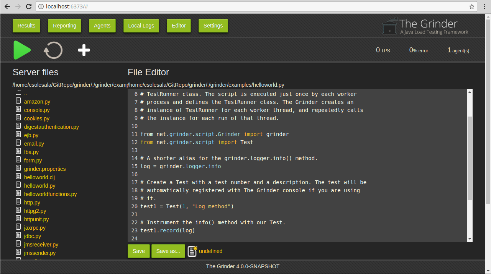
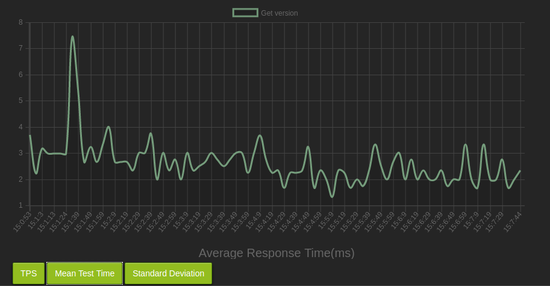

Under Construction...
The Grinder Web Console
Since the version 4.0.0, The grinder comes with a Web Console by default.
This webconsole is reachable at the following default location http://localhost:6373
The Web Console leverage the same webserver already used for the console service, thus it is possible to change the Web Console port
Just like you used to change the console service port.

Process controls
The Start/Stop processes, Reset statistics, and Start
Embedded Agent menu items send signals to Grinder processes that are
listening. (See the properties
grinder.useConsole, grinder.consoleHost
and consolePort.) Start processes and
Reset processes are also tool bar buttons.
The start processes button switch to a stop processes button when the processes are actually started.
You can check whether any agents are connected on the
Agents tab.
Worker processes that are controlled by the console can be in one of
three states:
- Initiated (waiting for a console signal)
- Running (performing tests, reporting to console)
- Finished (waiting for a console signal)
The Start processes control signals to worker
processes that they should move into the running state. Processes
that are already running will ignore this signal. Processes that are in
the finished state exit; the agent process will then reread the
properties file, and launch new worker processes in the running
state.
The Stop processes control signals all the worker
processes to exit. The agent process will then reread the
properties file and launch new worker processes.
The Reset statistics control simply set to zero all the
statistics data recording by the grinder.
The Start embedded agent control is a new feature of the
Grinder 4.0.0. It aims to start an agent within the Grinder Console
Java VM. This way it becomes easy to deploy a Console/Single Agent
Grinder topology
Each time the worker processes run, they generate a new
set of logs. Logs from previous runs are "archived" by renaming
them. The number of logs that are kept from previous runs can be
controlled with grinder.numberOfOldLogs.
The Results tab
The Results tab shows the results from The Grinder instrumentation.
| Test(s) |
The test description as specified in the test script. |
| Tests |
The total number of iterations of the test that were successfully executed by The Grinder during the test run. |
| Errors |
The total number of iterations of the test that failed to be fully executed by The Grinder during the test run. |
| Mean Resp Time |
The mean time taken to execute the test and receive the full response from the target server/application, in milliseconds. |
| Test Time Standard Deviation |
The mean standard deviation of the time taken to execute the test and receive the full response from the target
server/application, in milliseconds. |
| TPS |
Transactions per second. The average number of iterations of the test that successfully ran in a one second interval. |
| Peak TPS |
Peak Transactions per second. The maximum number of iterations of the test that successfully ran in a one second interval. |
There is additional instrumentation provided by the HTTPPlugin.
| Mean Response Length |
The mean size of HTTP response from the target server/application in response to the executed test, in bytes. |
| Response Bytes per Second |
The mean number of bytes per second received from the target server/application, in bytes per second. This gives an indication of the amount of
bandwidth being consumed by the test. This does not take into account the amount of traffic being sent to the target server/application. |
| Response Errors |
The total number of HTTP Response Error Codes (eg, 404, 500 etc) received during the test run. |
| Mean Time to Resolve Host |
The mean time taken to resolve the ip address of the target server from the Fully Qualified
Domain Name, via hosts file or DNS, in milliseconds. This is the time relative to the start of the test iteration. |
| Mean Time to Establish Connection |
The mean time taken to establish a tcp connection to the target server/application, in milliseconds.
This is the time relative to the start of the test iteration. |
| Mean Time to First Byte |
The mean time taken to receive the first byte of response from the target server/application, in milliseconds.
This is the time relative to the start of the test iteration. |
The Reporting tab
The Reporting tab shows graphs in relation with the results from The Grinder instrumentation.

There is three different graphs, reprensenting the evolution of the following metrics over the last hour:
- TPS - The Transaction per seconds
- Mean Test Time
Standard Deviation
Each graph displays (at maximum) the last hour of the relative metrics,
with a sample period or 5 seconds. This scale is not modifiable for the
moment. If you reset the statistics using the Reset statistics button or the
console service API, it also resets the graphs
Agents tab
This tab displays information about the Agents and their worker processes.
| Name |
The name of the process. A parent process will take the hostname of the box on which it is running
Its child processes take the name of the parent process and add a suffix of "-x" where x is an integer,
eg. myserver-0. |
| State |
Information about the state of the process, eg. "CONNECTED" or "RUNNING" |
| Workers |
The number of Workers currently created by the Agent. |
Local Logs tab
This tab displays list the files in the logs generated in the local grinder.logDirectory folder
It is useful to read the logs generated by the agents started on the same box of the Console
There is three buttons on this tab, there is a Refresh button that you can use to make sure the list
of files currenly displayed is the one present in the folder. There is a Clear All button that erase all the
content of the log folder. Then there is a Download button that aims to download the file currenlty displayed
Only the 50000 last lines of the log file are displayed when you click on a flie in the Log Files list
Editor tab
This tab contains the console support for script editing.
To use the file distribution, follow these steps:
- Set the directory for the script distribution
- Create a script and a property file
- Select the properties file to use
- Start the Worker processes
Set the directory for the script distribution
The file tree on the left hand side of Script tab is shows the a view
of local files on the console machine. Use
the Set Distribution folder button to set the distribution directory to the place
where you want to store your scripts. All of the files below the directory will be
distributed to the worker processes, so don't set it to /home or C:\.
If you are using The Grinder for the first time, you might like to set
the distribution directory to the examples directory in
The Grinder installation.
Create a script and a property file
You can use the console to create, view, and edit script files in the
distribution directory. The editor is rudimentary, but good enough for
basic editing.
If your script relies on other files (including Jython modules), copy
them below the distribution directory.
Once you have your script ready, create a
properties file.
The file name extension should be properties, and unless you have many
different properties files in the directory, the file is usually called
grinder.properties. If your script is not called grinder.py,
add a grinder.script property to your properties file:
grinder.script = myscript.py
The properties sent from the console are combined with any set
in a grinder.properties file in the agent's working directory
or set
on the agent command line. If a property is specified in several
places, the order of precedence is
- Properties sent by the console[most important]
- Properties set on the agent command line
- Properties in the agent's local
grinder.properties file [least important]
If your agents are running remotely to the
console, you will need to set the grinder.consoleHost property
(and grinder.consolePort if the console isn't using the
default port) in the agent's command line or local
grinder.properties so it can make the initial connection
to the console.
Select the properties file to use
Open the properties file and click on the Select Properties button under the editor zone

The properties file is now accessible using the link present under the editor zone
Settings tab
This tab allows the user to customize the Grinder Web Console with some settings.
| Refresh Time |
The period the Web Console sends HTTP request to the Console Service in order to refresh the interface |
| Grinder Base Path |
Set the path where the Grinder starts to list the files in the editor |
| Kind of reported data |
The kind of data reported by the Console in both Results and Reporting tabs
- From The beginning: The data are an average of the statistics reported since the beginning of the test
- latest: The data are only the one reported by the last grinder statistic sample
|